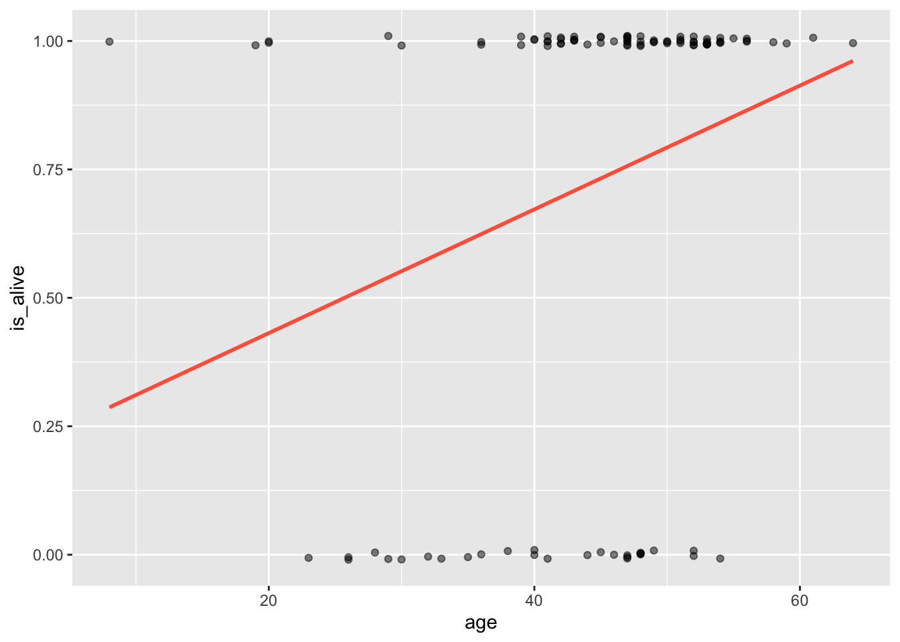

Code
data(heart_transplant)In the previous labs, we built regression models with numerical response variables only (linear regression). In this lab, you will learn how to build regression models with a categorical response variable with two levels (i.e., binary outcomes). For example, we may want to model student success(pass of fail) in a given course based on factors such as class attendance, socio-economic background, enrollment type (full time or not), among others. The type of regression used for problems of this kind is called logistic regression and is one of the many generalized linear models (GLMs) that exist.
A well-known Stanford University study on heart transplants tracked the five-year survival rate of patients with dire heart ailments. The purpose of the study was to assess the efficacy of heart transplants, but for right now we will simply focus on modeling the survival of the patients - whether the patients were alive or not five years later.
Create a new quarto file with the title Intro to Logistic Regression and save the file as lab_04. If you are unsure how to do this, please refer to previous labs (e.g., lab 2).
We will use these packages openintro, tidyverse, statsr, GGally, broom, and Stat2Data. If you are missing any of the packages, R will prompted. Just install them. To install a package, use the command:
install.packages("package name")Next, load the packages:
library(openintro)
library(tidyverse)
library(statsr)
library(broom)
library(GGally)
library(Stat2Data)Run the packages before you proceed to make sure they loaded properly.
We will use a data frame called heart_transplant that is contained in the openintro package. Since this package is already loaded, you can load the data using the code below. After loading the data, you should view it to understand its structure and the variables it contains.
data(heart_transplant)To learn more about this data set, you can use the ? operator followed by the name of the data set. For example:
?heart_transplantLet us start by creating a scatter plot to visualize the relationship between the variables age and survived. Recall that the variable survived tells us whether someone is still alive or not after five years.
ggplot(data = heart_transplant, aes(x = age, y = survived)) +
geom_jitter(width = 0, height = 0.01, alpha = 0.5)# We use a jitter to shake up the points a little bit
# Notice we have also added more arguments in the jitter.
# Try removing the extra arguments in the jitter to see what happensQuestion: Interpret the plot above. What do you observe?
In order to create a logistic regression model, we will need to dummy code the variable survived to use 0’s and 1’s. We can set alive = 0, and dead = 1 and save t We can get around this by creating a new variable that is binary (either 0 or 1), based on whether the patient survived to the end of the study. We call this new variable is_alive.
heart_transplant <- heart_transplant |>
mutate(is_alive = ifelse(survived == "alive", 0, 1))Below is a new scatter plot with a changed vertical axis. We are saving the object as data_space because we will need it later:
data_space <- ggplot(data = heart_transplant, aes(x = age, y = is_alive)) +
geom_jitter(width = 0, height = 0.01, alpha = 0.5)
print(data_space)
There is nothing preventing us from fitting a simple linear regression model to these data, and in fact, in certain cases this may be an appropriate thing to do.
But as we discussed in class, it’s not hard to see that the line doesn’t fit very well.
data_space +
geom_smooth(method = "lm", se = FALSE, color="tomato")`geom_smooth()` using formula = 'y ~ x'
Limitations of regression of this model (linear)
What would this model predict as the probability of a 70-year-old patient being alive? It would be a number less than zero, which doesn’t make sense as a probability. Because the regression line always extends to infinity in either direction, it will make predictions that are not between 0 and 1, sometimes even for reasonable values of the explanatory variable.
Second, the variability in a binary response may violate a number of other assumptions that we make when we do inference in regression. We will learn about those assumptions later when we cover inference for regression.
Thankfully, a modeling framework exists that generalizes regression to include response variables that are non-normally distributed. This family is called generalized linear models or GLMs for short. One member of the family of GLMs is called logistic regression, and this is the one that models a binary response variable.
A logistic regression model uses the logit function to model relationships such as the one above. Here is the logit function with a single predictor variable, \(x_1.\):
\[ logit(p)=ln\left(\frac{p}{1-p}\right)= b_0+b_1x_1 \]
The structure for fitting the logistic regression model is slightly different from the one used for linear regression. In the code below, we create the model (saving it as model_1) and then tidy it. Notice that we use the family argument to specify the type of glm that we want (in this case binomial because the response is binary).
model_1 <- glm(is_alive ~ age, family = binomial, data = heart_transplant)
tidy(model_1)# A tibble: 2 × 5
term estimate std.error statistic p.value
<chr> <dbl> <dbl> <dbl> <dbl>
1 (Intercept) -1.56 1.02 -1.54 0.123
2 age 0.0585 0.0231 2.54 0.0112#NoticeEquation of the Model:
\[ \text{logit}(p)=ln\left(\frac{p}{1-p}\right)= -1.56 + 1.02 \times \text{Age} \]
Interpretation: The slope for age is 1.02. This means that for every additional year in age, the log odds of being dead increases by 1.02.
The raw model we created above models log odds, we can exponentiate the coefficients to get the odds. This makes it easier to interpret the model:
One important reason to build a model is to learn from the coefficients about the underlying random process. For example, in the Stanford heart transplant study, we were able to estimate the effect of age on the five-year survival rate. This simple model shed no light on the obvious purpose of the study, which was to determine whether those patients who received heart transplants were likely to live longer than the control group that received no transplant.
Let us create a new model by adding the variable transplant, which tells us whether each patient was in the treatment group or in the control group. We will call this new model model_2. See code below:
model_2 <- glm(is_alive ~ age + transplant,
data = heart_transplant, family = binomial)
tidy(model_2)# A tibble: 3 × 5
term estimate std.error statistic p.value
<chr> <dbl> <dbl> <dbl> <dbl>
1 (Intercept) -0.973 1.08 -0.904 0.366
2 age 0.0763 0.0255 2.99 0.00277
3 transplanttreatment -1.82 0.668 -2.73 0.00635Write the equation of the model and interpret the slopes for each predictor variable. Use your model to predict the survival status of a 61-year old participant who received a transplant.
Equation of the Model: \[ ln\left(\frac{p}{1-p}\right)= -0.97 + 0.076 \times \text{Age}-1.82\times transplant\_treatment \]
Interpretation:
The slope for age is 0.076. This means that for every additional year in age, the log odds of being dead increases by 0.076 on average.
The slope for transplant_treatment is -1.82. This means that the log odds of being dead for a patient who received a transplant is 1.82 less than the log odds of being dead for a patient who did not receive a transplant.
You can also exponentiate the coefficients as shown:
The augment() function (used in previous labs) returns a data frame containing fitted values (i.e., the log odds) for each observation. Let us run this function and store the data frame as aug_model_2:
aug_model_2<- augment(model_2)Take a look at aug_model_2. The variable/column .fitted are the log odds. However, it is more useful to get probabilities instead of log odds. To achieve this, you can just add the argument type.predict to the augment() and set its value to response. See code below:
aug_model_2_prob<- augment(model_2, type.predict = "response")If our response variable is binary (alive or dead), then why are we making probabilistic predictions? To do this, we have to set a threshold on the probabilities that can be used to determine whether a patient is alive or dead. The most commonly used threshold is 0.5. If the probability of being dead is greater than 0.5, we assign the label dead, otherwise, use alive. Use the code below:
model_2_plus <- aug_model_2_prob |>
mutate(alive_hat = ifelse(.fitted > 0.5, "dead", "alive"))
#We round fitted to 0 or 1 and save it as a new column called alive_hatSo how well did our model perform? One common way of assessing performance of models in logistic regression is to use a confusion matrix. This simply cross-tabulates the actual data with what the model predicted. The code below tabulates the predicted outcomes (alive_hat) vs the actual ones (is_alive). we select the two variables of interest and then pipe them into the table() function as shown below:
Make the below plot to appear at the center of the page
alive_hat
is_alive alive dead
alive 8 20
dead 4 71In this case, the rows represent the model estimates (classification) while the rows represent the actual data. The model predicted that 91 patients would die, and only 12 would be alive. Of those 91, 71 actually did died, while of the 12 that are predicted to live, 8 actually lived. Thus, our overall accuracy is 79 out of 103. We often report this is a percentage, in this case 77%.
In these exercises, you will use a data frame called MedGPA contained in the Stat2Data package. Be sure to load the data and examine it before you start the lab.
(2 pts) Create a scatter plot to visualize the relationship between GPA (x-axis) and Acceptance (y-axis). Describe this relationship.
(2 pts) Create a new plot by adding a straight line (use lm method) to the plot in number 1 above. Is this line a good fit for the data? Why or why not?
(4 pts) Create a logistic regression model for predicting Acceptance using GPA as the only predictor variable. Write down the equation of the model below and interpret its parameters (slope and intercept) in context.
(4 pts) Create a new logistic regression model by adding the variables Sex and MCAT to the model in #3 above. Write down the equation of the model and interpret all slopes in context.
(4 pts) What does the model in #4 above predict for the first case (first row) in the data frame MedGPA? Does the model make the correct prediction? What about the last case (row 55)?
(4 pts) Create a confusion matrix for the model in #4 above. What is the accuracy (give as a percentage) of this model? Suggest some ways to improve the accuracy of the model.